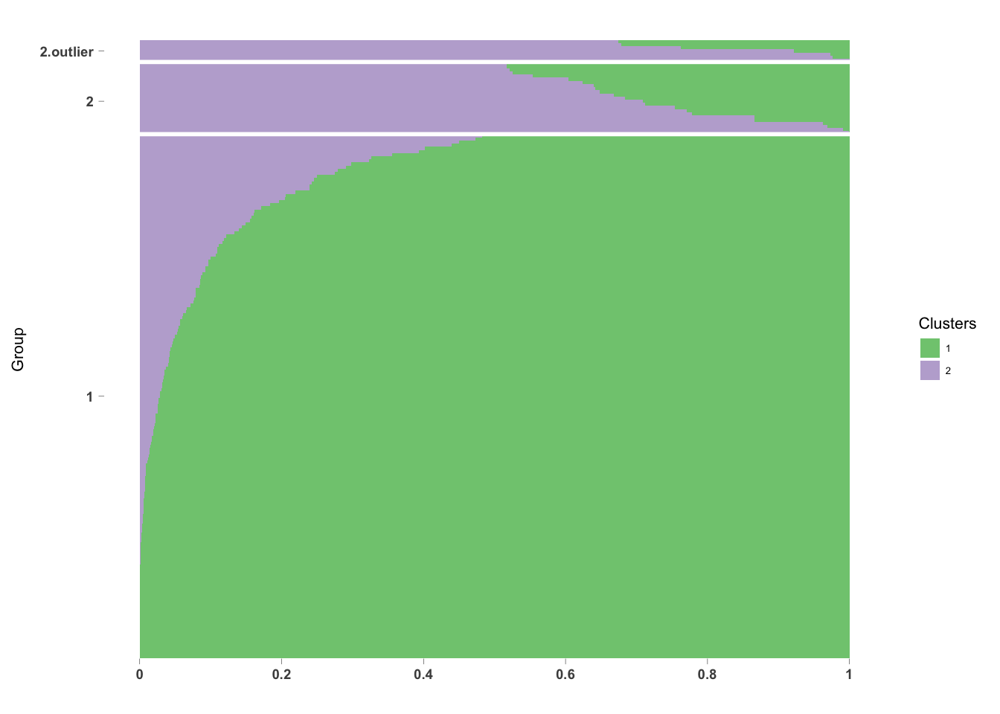

Warning in as.POSIXlt.POSIXct(Sys.time()): unknown timezone 'zone/tz/2018c.
1.0/zoneinfo/America/Chicago'Last updated: 2018-06-07
Code version: 867e392
Examine the GOM membership probability of the samples that are outliers on the PC1 vs PC2 plot.
library(ggplot2)
library(metagenomeSeq)
library(matrixStats)Load PCA
obj <- readRDS("../data/nasal_GOM.rds")Load previously computed results for k=2.
fits <- readRDS(file = "../data/count-clust.rds")Get PCA results
pcaRES <- function(obj,tran=TRUE,comp=1:2,norm=TRUE,log=TRUE,usePCA=TRUE,useDist=FALSE,distfun=stats::dist,dist.method="euclidian",n=NULL,...){
mat = returnAppropriateObj(obj,norm,log)
if(useDist==FALSE & usePCA==FALSE) stop("Classical MDS requires distances")
if(is.null(n)) n = min(nrow(mat),1000)
otusToKeep <- which(rowSums(mat)>0)
otuVars<-rowSds(mat[otusToKeep,])
otuIndices<-otusToKeep[order(otuVars,decreasing=TRUE)[seq_len(n)]]
mat <- mat[otuIndices,]
if(tran==TRUE){
mat = t(mat)
}
if(useDist==TRUE){
d <- distfun(mat,method=dist.method)
} else{ d = mat }
if(usePCA==FALSE){
ord = cmdscale(d,k = max(comp))
xl = paste("MDS component:",comp[1])
yl = paste("MDS component:",comp[2])
} else{
pcaRes <- prcomp(d)
ord <- pcaRes$x
vars <- pcaRes$sdev^2
vars <- round(vars/sum(vars),5)*100
xl <- sprintf("PCA %s: %.2f%% variance",colnames(ord)[comp[1]], vars[comp[1]])
yl <- sprintf("PCA %s: %.2f%% variance",colnames(ord)[comp[2]], vars[comp[2]])
}
return(pcaRes)
}
obj <- obj[,order(pData(obj)$GOM)]
pcares <- pcaRES(obj,pch=21,bg=pData(obj)$GOM,main="")save to output folder.
saveRDS(pcares, "../output/explore-cluster-probability.Rmd/pcares.rds")7 outliers on PCA plot. All of them below to the second cluster.
all.equal(rownames(pcares$x), colnames(obj))[1] TRUEpdata <- pData(obj)
pdata$PC1 <- pcares$x[,1]
pdata$PC2 <- pcares$x[,2]
pdata$pc_outlier <- pdata$PC1 > 20 & pdata$PC2 < -20
all.equal(rownames(pdata), rownames(fits[[1]]$omega))[1] "186 string mismatches"omega <- fits[[1]]$omega
omega <- omega[match(rownames(pdata),rownames(omega)),]
all.equal(rownames(pdata), rownames(omega))[1] TRUEpdata$gom_prob_group1 <- omega[,1]
pdata$gom_prob_group2 <- omega[,2]table(pdata$pc_outlier)
FALSE TRUE
190 7 table(pdata$pc_outlier, pdata$GOM)
1 2
FALSE 167 23
TRUE 0 7cbind(pdata$gom_prob_group1[which(pdata$pc_outlier==1)], pdata$gom_prob_group2[which(pdata$pc_outlier==1)]) [,1] [,2]
[1,] 0.0273438612 0.9726561
[2,] 0.0001033176 0.9998967
[3,] 0.2372200486 0.7627800
[4,] 0.3211409734 0.6788590
[5,] 0.3253818129 0.6746182
[6,] 0.0785997584 0.9214002
[7,] 0.0233961031 0.9766039summary(pdata$gom_prob_group2[pdata$GOM==2 & pdata$pc_outlier==0]) Min. 1st Qu. Median Mean 3rd Qu. Max.
0.5175 0.6140 0.6835 0.7184 0.8221 0.9998 summary(pdata$gom_prob_group2[pdata$GOM==2 & pdata$pc_outlier==1]) Min. 1st Qu. Median Mean 3rd Qu. Max.
0.6746 0.7208 0.9214 0.8553 0.9746 0.9999 The non-outliers in Group 2 are more similar to Group 1.
library(CountClust)
newgroup <- pdata$GOM
newgroup[which(pdata$pc_outlier==1 & pdata$GOM=="2")] <- "2.outlier"
annotation <- data.frame(
sample_id = paste0("X", c(1:NROW(omega))),
tissue_label = factor(newgroup,
levels = c("1", "2", "2.outlier") ) )
rownames(omega) <- annotation$sample_id;
StructureGGplot(omega = omega,
annotation = annotation,
palette = RColorBrewer::brewer.pal(3, "Accent"),
yaxis_label = "Group",
order_sample = TRUE,
axis_tick = list(axis_ticks_length = .1,
axis_ticks_lwd_y = .1,
axis_ticks_lwd_x = .1,
axis_label_size = 7,
axis_label_face = "bold"))
Save outlier info.
write.table(data.frame(sample_ID=rownames(pdata),
gom_prob_group1=pdata$gom_prob_group1,
gom_prob_group2=pdata$gom_prob_group2,
newgroup)[order(newgroup, decreasing = T),],
col.names = T, row.names = F, quote = F,
file = "../output/explore-cluster-probability.Rmd/outlier.list.txt")R version 3.4.1 (2017-06-30)
Platform: x86_64-apple-darwin15.6.0 (64-bit)
Running under: macOS High Sierra 10.13
Matrix products: default
BLAS: /Library/Frameworks/R.framework/Versions/3.4/Resources/lib/libRblas.0.dylib
LAPACK: /Library/Frameworks/R.framework/Versions/3.4/Resources/lib/libRlapack.dylib
locale:
[1] en_US.UTF-8/en_US.UTF-8/en_US.UTF-8/C/en_US.UTF-8/en_US.UTF-8
attached base packages:
[1] parallel stats graphics grDevices utils datasets methods
[8] base
other attached packages:
[1] CountClust_1.4.1 matrixStats_0.53.1 metagenomeSeq_1.21.1
[4] RColorBrewer_1.1-2 glmnet_2.0-16 foreach_1.4.4
[7] Matrix_1.2-14 limma_3.34.9 Biobase_2.38.0
[10] BiocGenerics_0.24.0 ggplot2_2.2.1
loaded via a namespace (and not attached):
[1] gtools_3.5.0 modeltools_0.2-21 slam_0.1-43
[4] reshape2_1.4.3 lattice_0.20-35 colorspace_1.3-2
[7] htmltools_0.3.6 stats4_3.4.1 mgcv_1.8-23
[10] yaml_2.1.19 rlang_0.2.0 pillar_1.2.2
[13] plyr_1.8.4 stringr_1.3.0 munsell_0.4.3
[16] gtable_0.2.0 caTools_1.17.1 codetools_0.2-15
[19] evaluate_0.10.1 knitr_1.20 permute_0.9-4
[22] flexmix_2.3-14 Rcpp_0.12.16 KernSmooth_2.23-15
[25] scales_0.5.0 backports_1.1.2 gdata_2.18.0
[28] vegan_2.5-1 maptpx_1.9-3 picante_1.6-2
[31] gplots_3.0.1 digest_0.6.15 stringi_1.2.2
[34] grid_3.4.1 rprojroot_1.3-2 cowplot_0.9.2
[37] tools_3.4.1 bitops_1.0-6 magrittr_1.5
[40] lazyeval_0.2.1 tibble_1.4.2 cluster_2.0.7-1
[43] ape_5.1 MASS_7.3-50 SQUAREM_2017.10-1
[46] rmarkdown_1.9 iterators_1.0.9 boot_1.3-20
[49] nnet_7.3-12 nlme_3.1-137 git2r_0.21.0
[52] compiler_3.4.1 This R Markdown site was created with workflowr